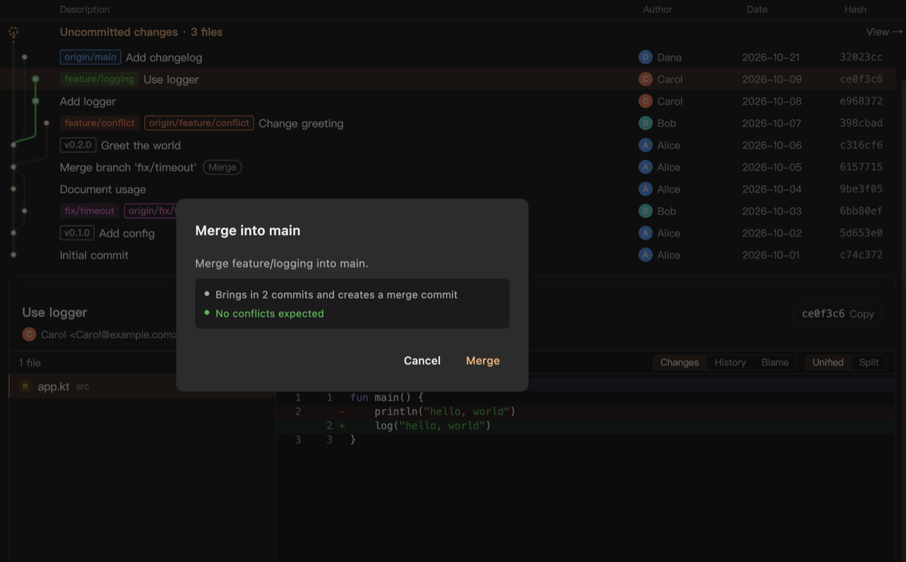
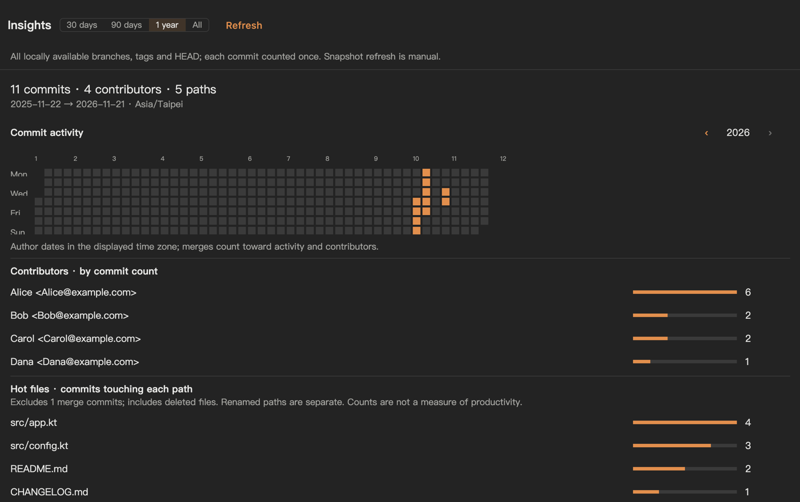

Know what Git will do, before it does it.
A Git client that shows your history as a graph, and preview merges and rebases before they run.


See it. Preview it. Undo it.
Stage down to a single line
Click a hunk or a single line to commit just what you mean.

Preview before you act
See how many commits come in and whether conflicts are expected, before anything changes.

Understand your history
A commit heatmap, top contributors and the files that change most.

Learn the command behind each click
Turn on Show Git commands and every action shows the Git it ran.

- Review operation impact
- Drag to merge or rebase
- Three-way conflicts
- Interactive rebase
- Blame across renames
- English and 中文
- Keyboard first · command palette
Light, dark, or follow your system.
Try it: this page and the screenshot at the top switch too.
Your repositories stay yours.
- No accountOpen a folder and start.
- No analyticsOnline only when you fetch, pull, push or clone.
- Never sees your passwordsGit and your system handle every credential prompt.
Get Preflight.
Free and open source (MIT), no account.
Download Source on GitHubBuilt with Kotlin Multiplatform and Compose Multiplatform: one codebase for multiple desktop systems.
Needs Git 2.50 or newer · Current version